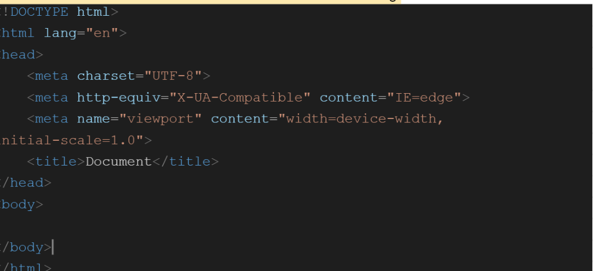
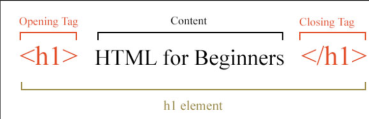

Html & CSS
HTML- Hypertext MarkUp Language
Html is a standard marku[p language that we can use to create different web pages.
It do contains different elements and has structure as following:

Where in this given structure,
# html tag or we can say any tag that has starting <> and ending with .
To instance, h tag for headings, p tag for paragraphs.
# Html element - html element is anything from the start of the tag to its end.
Here is an illustration of an h1 element with an image which clearly says about what is a tag? and what type of tags? and what is an element?

#html attribute- attributes are the modifiers for the element or we can provide more special information about an element.
For example, a and href attributes are used to add a lot of specialities to an element like links or images.
#inline element- Inline elements are those which never start on a new line and these elements are used where they are necessary.
E.g. This a element inside a paragraph
#Block elements-Block elements are the opposite of the inline elements. These elements always start on a new line.
E.g.